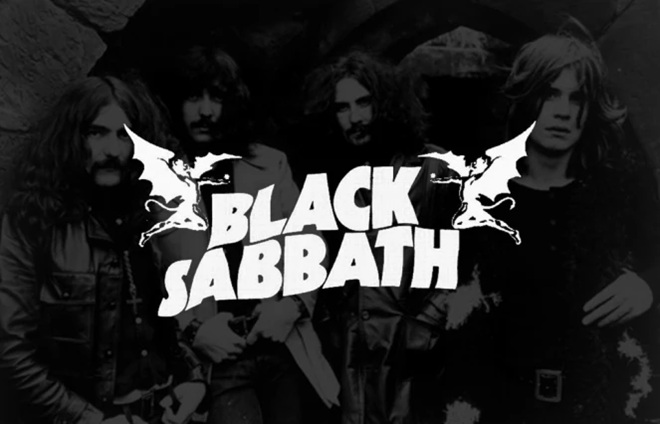

O Black Sabbath é uma banda britânica de heavy metal formada em Birmingham, em 1968. Composta inicialmente por Ozzy Osbourne (vocal), Tony Iommi (guitarra), Geezer Butler (baixo) e Bill Ward (bateria), a banda é considerada uma das pioneiras do gênero, influenciando gerações de músicos e bandas.
Conhecidos por seus riffs pesados, letras sombrias e atmosfera densa, o Black Sabbath criou um som único que definiu o heavy metal. Álbuns como "Black Sabbath" (1970), "Paranoid" (1970) e "Master of Reality" (1971) são considerados clássicos do gênero, com músicas como "Paranoid", "Iron Man" e "War Pigs" que se tornaram hinos do heavy metal.
Ao longo de sua carreira, a banda passou por diversas mudanças na formação, com Tony Iommi sendo o único membro constante. Ozzy Osbourne deixou a banda em 1979, sendo substituído por Ronnie James Dio, que também deixou sua marca no som da banda.
O Black Sabbath encerrou suas atividades em 2017, após uma turnê de despedida. No entanto, seu legado permanece vivo, com sua música influenciando bandas de heavy metal e rock até os dias atuais.
|  | |||